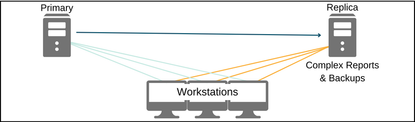

Replication
See Advanced Topics.
Replication is a technology built into MySQL that continuously keeps a Replica database synchronized with its Primary. If interested in Replication, contact Open Dental Support for general startup information.
To learn more about replication, see the MySQL 5.6 Manual or MariaDB Documentation.
Support: There is an additional fee per hour for replication support. See Replication Support for the current rate. We will provide 15 minutes of free diagnostic support, but anything in excess will be charged at the replication support rate. Services are limited to general advice, startup assistance, and troubleshooting the cause of replication failure when asked.
Also see:
- Replication Best Practices
- Replication: Update Open Dental Version
- Daisy Chain Replication: Add Server
- Replication Troubleshooting
- Reinitialize Replication
Warnings
Review the following warnings prior to considering Replication.
- Replication requires that proper safeguards be put in place to monitor and repair replication problems. It takes a very skilled database administrator to keep the synchronization running smoothly and to properly handle a downed network. Having a setup and response plan is important.
- We don't support any database access outside of Open Dental.
- The database administrator needs to keep the OpenDentImages folder synchronized. See Folder Replication.
- If running Daisy Chain Replication on live databases, there must be a Replica monitor.
- Within Open Dental, (Query window) CREATE and DROP commands can only be run from Report servers because they have been known to break Replication.
- Certain repair methods using our Database Maintenance tool are considered unsafe for Replication, and require special consideration. See details below.
Features that Won't Work with Replication
There are no plans to add support for the following features.
- Language Translation: Uses strings for primary key instead of int. And because English phrases are added automatically and frequently, it would be hard (but not impossible) to adapt it for use with Replication. This is not an issue as long as each computer is set for English-US.
- eClinicalWorks bridge: Rarely used by dental offices. It assumes that various parameters are int32.
- Public Health: School table and County table use strings instead of ints for primary keys. May end up with a few duplicates if not syncing in real-time.
TimeStamp columns, such as procedurelog.DateTStamp, will have different values in each database because of the inherent lag with Replication. When looking at the columns in the database, be aware that this is normal and expected.
Replication Options
One Way Replication: See One-Way Replication. This configuration is useful for offices that have many workstations or who experience slowness on the main server when running custom reports or complex backup scripts. Anyone considering Replication is encouraged to run this configuration for a number of months to get very familiar with the administration.
The Replica pulls data from the Primary. No changes are ever made directly to the Replica database. Any users of Open Dental connecting to the Replica database should be trained to only run reports or make backups, not to do any data entry. Data is never sent from the Replica to the Primary because there is no replication process in that direction. If the Replica becomes corrupt, simply wipe it clean and start again.
Daisy Chain Replication: Daisy Chain Replication. This configuration should only be attempted by users who are experienced with Replication. The Replication forms a ring. All the databases together are referred to as a single virtual database. Each location can continue to function normally even if the internet connection is lost. The data from the other locations will not be fresh, but an office typically doesn't care as much about that data. Once the internet connection is restored, the Replication quickly updates the database with current data.
This configuration works well for mobile vans that service children or nursing homes. The servers at each location have identical data and they stay in sync using replication.
Database Maintenance
If running Database Maintenance or Database Maintenance for Patient:
- Connect to all servers in the Daisy Chain with Open Dental.
- In Database Maintenance, run a check on each server.
- Running a check is required. Do not run a fix.
- Compare the problem results across all servers, highlighting the matching methods on a single server as they are compared.
- If the result of what needs fixed is the same per method on every server it is safe to run the fix for that method.
- If there is a difference between the servers for a method then consider reinitialization as one server has data that is different than another server.
- Run the fix on one server only. Do not attempt a fix on any other server.
- Because not all methods are safe to run with Replication, the following warning displays.

- Click Yes to run both safe and unsafe selected methods. A prompt for a password displays. The password is abracadabra.
If a wrong password is entered, or Cancel is clicked, only safe methods are run.
- Click No to only run safe selected Database Maintenance methods.
- Click Yes to run both safe and unsafe selected methods. A prompt for a password displays. The password is abracadabra.